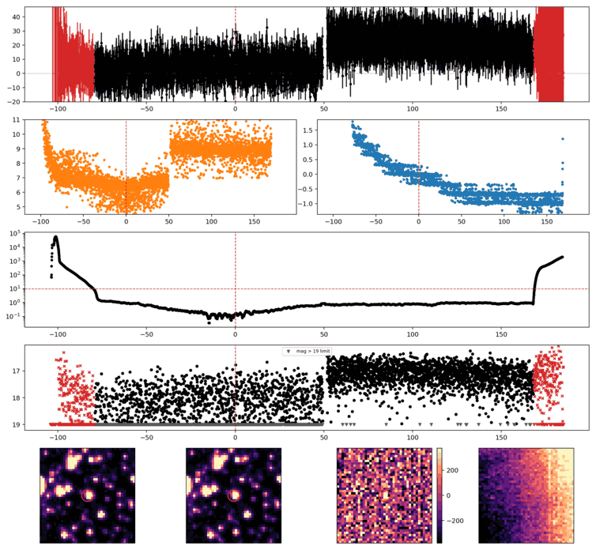
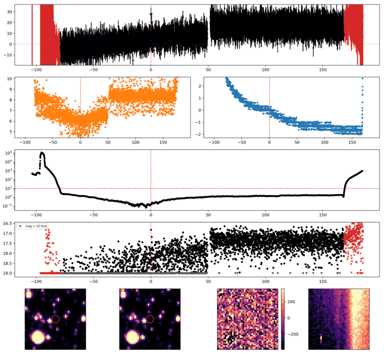
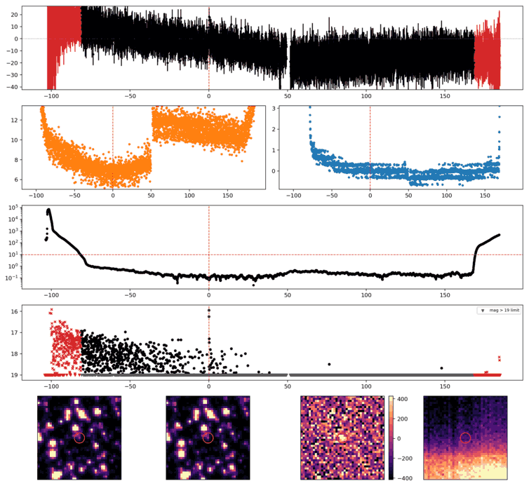
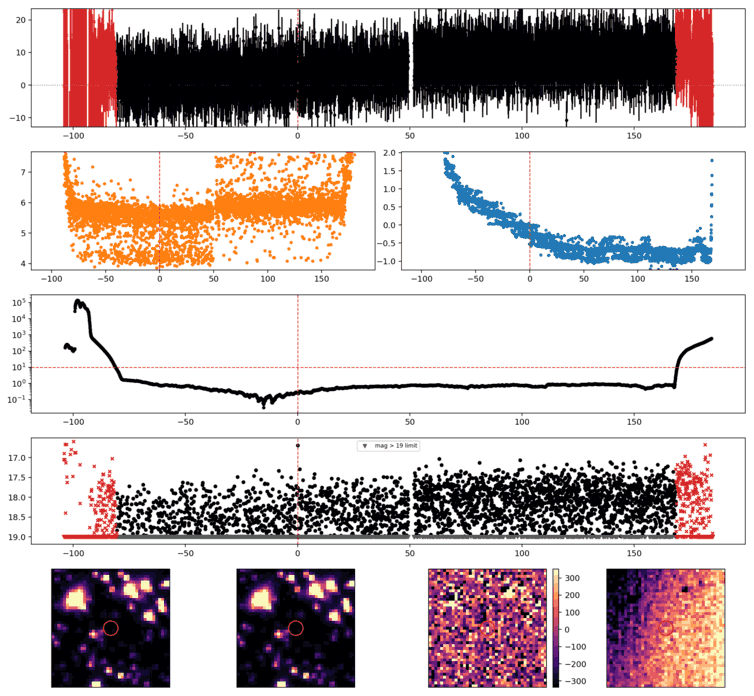
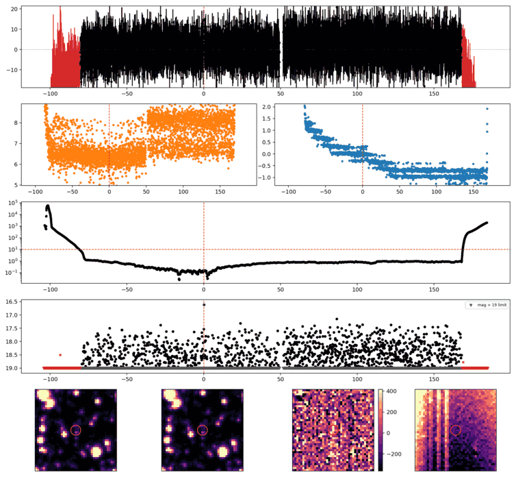

Search centered on refined position (307.4798388, -68.9401279 deg). Gaia coordinates are at J2016.0; proper motions are shown, without epoch propagation. A positional match does not change the candidate flags.
No Gaia DR3 sources found within 5 arcseconds.
Retrieved 2026-10-18T06:14:37.941576+00:00

Search centered on refined position (326.9197566, -67.6054314 deg). Gaia coordinates are at J2016.0; proper motions are shown, without epoch propagation. A positional match does not change the candidate flags.
No Gaia DR3 sources found within 5 arcseconds.
Retrieved 2026-10-18T06:14:41.568253+00:00

Search centered on refined position (268.6821602, -74.5603823 deg). Gaia coordinates are at J2016.0; proper motions are shown, without epoch propagation. A positional match does not change the candidate flags.
| Source ID / catalog entry | Separation (arcsec) | RA (deg) | Dec (deg) | G (mag) | BP (mag) | RP (mag) | Parallax ± error (mas) | PM RA* ± error (mas/yr) | PM Dec ± error (mas/yr) | RUWE | Variability |
|---|---|---|---|---|---|---|---|---|---|---|---|
| 5802950040414888320 | 1.190 | 268.6811511 | -74.5601898 | 16.119 | 17.780 | 14.879 | 9.852 ± 0.038 | -38.005 ± 0.033 | -118.796 ± 0.038 | 1.041 | NOT_AVAILABLE |
Retrieved 2026-10-18T06:14:45.862995+00:00
Representative chosen by category, detection count, then Gaussian S/N. Original measurements and classifications are retained below.

Search centered on refined position (345.5659052, -74.7929216 deg). Gaia coordinates are at J2016.0; proper motions are shown, without epoch propagation. A positional match does not change the candidate flags.
No Gaia DR3 sources found within 5 arcseconds.
Retrieved 2026-10-18T06:14:49.060751+00:00

Search centered on refined position (316.7167368, -72.1314871 deg). Gaia coordinates are at J2016.0; proper motions are shown, without epoch propagation. A positional match does not change the candidate flags.
No Gaia DR3 sources found within 5 arcseconds.
Retrieved 2026-10-18T06:14:52.566071+00:00